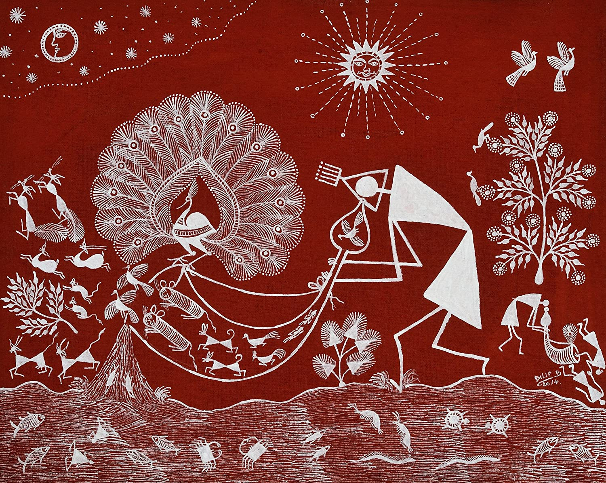

Maharashtra is known for its Warli folk paintings. Warli is the name of the largest tribe found on the northern outskirts of Mumbai, in Western India. Despite being in such close proximity of the largest metropolis in India, Warli tribesmen shun all influences of modern urbanization. Warli Art was first discovered in the early seventies. While there are no records of the exact origins of this art, its roots may be traced to as early as the 10th century A.D. Warli is the vivid expression of daily and social events of the Warli tribe of Maharashtra, used by them to embellish the walls of village houses. This was the only means of transmitting folklore to a populace not acquainted with the written word. This art form is simple in comparison to the vibrant paintings of Madhubani.
Women are mainly engaged in the creation of these paintings. These paintings do not depict mythological characters or images of deities, but depict social life. Images of human beings and animals, along with scenes from daily life are created in a loose rhythmic pattern. These tribal paintings of Maharashtra are traditionally done in the homes of the Warlis. Painted white on mud walls, they are pretty close to pre-historic cave paintings in execution and usually depict scenes of human figures engaged in activities like hunting, dancing, sowing and harvesting.
Stylistically, they can be recognized by the fact that they are painted on an austere mud base using one color, white, with occasional dots in red and yellow. This colour is obtained from grounding rice into white powder. This sobriety is offset by the ebullience of their content. These themes are highly repetitive and symbolic. Many of the Warli paintings that represent Palghat, the marriage god, often include a horse used by the bride and groom. The painting is sacred and without it, the marriage cannot take place. These paintings also serve social and religious aspirations of the local people. It is believed that these paintings invoke powers of the Gods.
In Warli paintings it is rare to see a straight line. A series of dots and dashes make one line. The artists have recently started to draw straight lines in their paintings. These days, even men have taken to painting and they are often done on paper incorporating traditional decorative Warli motifs with modern elements such as the bicycle, etc. Warli paintings on paper have become very popular and are now sold all over India. Today, small paintings are done on cloth and paper but they look best on the walls or in the form of huge murals that bring out the vast and magical world of the Warlis. For the Warlis, tradition is still adhered to but at the same time new ideas have been allowed to seep in which helps them face new challenges from the market.
